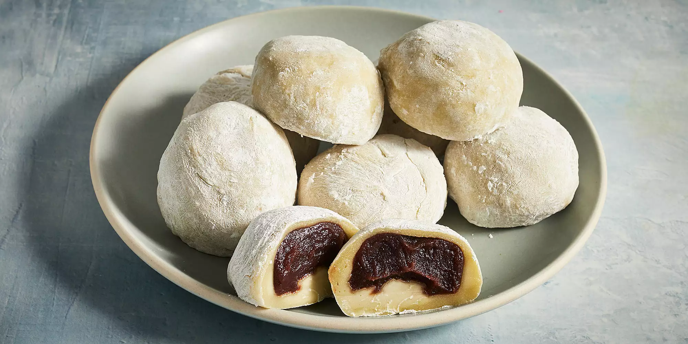

Home
Mochi with Red Bean

Ingredient List:
- 1 cup sweetened red bean paste
- 1 cup glutinous rice flour
- 1 tsp green tea powder (matcha)
- 1 cup water
- 1/4 cup white sugar
- 1/2 cup cornstarch
Cooking Steps:
- Prepare aluminium foil to wrap red bean paste with and place in freezer until solid
- Combine glutinous rice flour and green tea powder to thorougly mix
- Mix in water then sugar until mixture becomes smooth
- Wrap bowl with plastic wrap and microwave for 3.5 minutes
- Remove red bean paste once solid and divide equally into 8 balls
- Once rice & flour mixture is finished heating, stir and reheat for another 15-30 seconds
-
Sprinkle a workable surface with cornstarch.
Separate roughly 2 tablespoons of the rice & flour mixture into a ball then flatten.
Place 1 frozen red bean paste in the center of the dough and pinch/press/roll the dought to fully cover the paste.
Add a small amount of cornstarch and place seam-side down onto baking paper.